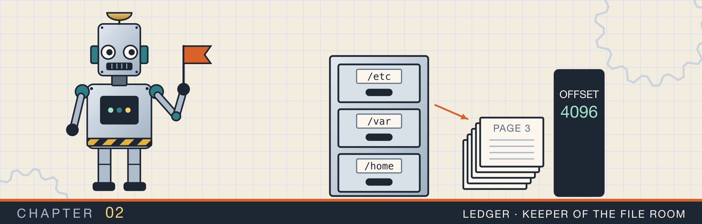
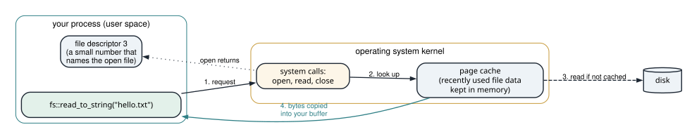
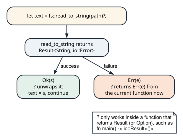
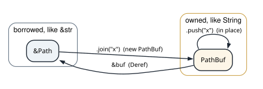
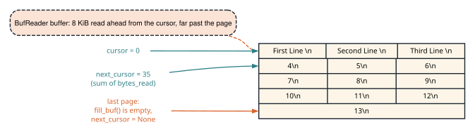

Files, paths, and the command line
This chapter covers
- How a program interacts with the kernel and storage subsystem when reading a file
Resultand the?operator for structured error propagationPathandPathBuf, alongside whole-file and line-oriented reading strategies- Appending, copying, renaming, and deleting files, and classifying I/O error kinds
- Listing directory entries and traversing nested directory trees
- Cursor-based file pagination and typed command-line argument parsing
Interacting with persistent storage and process arguments requires crossing the privilege boundary between user space and the operating system kernel. Unlike pure in-memory computation, every kernel-mediated operation can fail because a path may not exist, permissions may be denied, or underlying storage may return an error.
Rust encodes recoverable failures explicitly through the Result type, preventing callers from overlooking error conditions. Building on Result and the ? propagation operator, the sections below develop path manipulation, buffered I/O, atomic file mutations, and recursive directory traversal, culminating in two complete utilities: a stateless cursor-based file paginator and a typed command-line argument parser.
Three operating system abstractions govern all file I/O:
- The kernel is the privileged core of the operating system responsible for mediating hardware, virtual memory, and filesystem access.
- A system call is a controlled trap from user space into the kernel requesting a privileged service, such as opening a file or transferring a byte range.
- A file descriptor is a small non-negative integer allocated per process by the kernel to identify an open file table entry; subsequent I/O system calls reference the file through this integer.
2.1 What happens when you read a file
User-space processes cannot access storage hardware directly. Every file read is mediated by the kernel through a sequence of system calls, as illustrated in Figure 2.1.

Reading a file proceeds in three stages:
openrequests access to the path; the kernel verifies permissions and returns a file descriptor.readrequests bytes from that descriptor; the kernel copies data from its page cache (fetching from disk on a cache miss) into a user-space buffer.closenotifies the kernel that the process has finished with the file so the descriptor can be reclaimed.
Rust’s standard library wraps these system calls in safe abstractions, reporting any kernel error through Result.
2.2 Result and the ? operator
Result is a two-variant enum representing either a successful value or a failure:
enum Result<T, E> {
Ok(T), // the operation succeeded and produced a T
Err(E), // the operation failed with an error of type E
}For I/O operations, the error type is std::io::Error, and io::Result<T> is a standard type alias for Result<T, io::Error>. Accordingly, fs::read_to_string(path) returns io::Result<String>, yielding either the decoded text or the underlying OS error.
Handling every fallible call with an explicit match quickly obscures control flow when a function chains multiple I/O operations. The ? operator eliminates that boilerplate. Appending ? to any Result expression performs one of two actions (Figure 2.2):
- On
Ok(x), the expression evaluates toxand execution continues. - On
Err(e), the enclosing function immediately returnsErr(e)to its caller.

? operator. It can only be used inside a function that itself returns Result.Because ? performs an early return on error, the enclosing function must itself return a compatible Result type. For this reason, the binaries in this chapter declare fn main() -> io::Result<()>. When main returns an Err, the Rust runtime prints the error message to standard error and exits with status code 1.
2.3 Paths
A path identifies a file or directory, such as /tmp/data.txt. Rust splits path handling across two complementary types: &Path is an unsized, borrowed slice of a path, while PathBuf is an owned, heap-allocated buffer that can be mutated in place. Their relationship mirrors &str and String (Figure 2.3).

join returns a new owned path. push extends a PathBuf in place. A &PathBuf converts to &Path automatically when a function asks for one.Listing 2.1 Building paths and taking them apart. src/bin/path_buff.rs
use std::path::{Path, PathBuf};
fn main() {
let dir = Path::new("/tmp");
let file = dir.join("data.txt");
let mut buf = PathBuf::from(dir);
buf.push("nested");
buf.push("file.txt");
println!("file: {}", file.display());
println!("buf: {}", buf.display());
println!("parent: {:?}", buf.parent());
println!("file_name: {:?}", buf.file_name());
println!("ext: {:?}", buf.extension());
}Path::new("/tmp") constructs a borrowed &Path view without allocating. Calling dir.join("data.txt") allocates and returns a new PathBuf, whereas PathBuf::from(dir) copies the base path into an owned buffer that push extends in place.
$ cargo run --bin path_buff
file: /tmp/data.txt
buf: /tmp/nested/file.txt
parent: Some("/tmp/nested")
file_name: Some("file.txt")
ext: Some("txt")
Inspectors such as parent, file_name, and extension return Option because not every path contains those components; for instance, the root directory / has no parent. Formatting a path for display requires calling display(). On Unix systems (Linux and macOS), filesystem paths are arbitrary non-NUL byte sequences that need not be valid UTF-8; display() substitutes replacement characters for any non-UTF-8 sequences during formatting.
WARNING: Passing an absolute path to join or push replaces the entire base path rather than appending to it; Path::new("/srv").join("/etc/passwd") resolves to /etc/passwd. When constructing paths from untrusted input, reject absolute paths and .. traversal components before joining.
2.4 Reading a file
2.4.1 The whole file at once
For small files, the most direct approach loads the entire file into a single String.
Listing 2.2 Write a file, then read it back. src/bin/read_write_file.rs
use std::{
fs,
io,
path::{Path, PathBuf},
};
// `&Path` accepts both a `&Path` and a `&PathBuf` argument; `&PathBuf` would not.
fn read_content_of_file(path: &Path) -> io::Result<String> {
fs::read_to_string(path)
}
fn main() -> io::Result<()> {
fs::write("hello.txt", "Hello, Rust!\n")?;
// `join` builds a new PathBuf and leaves `base_dir` unchanged.
let base_dir = PathBuf::from(".");
let joined_path = base_dir.join("hello.txt");
// `push` mutates the PathBuf in place instead of returning a new one.
let mut mut_base_dir = PathBuf::from(".");
mut_base_dir.push("hello.txt");
let text = read_content_of_file(&joined_path)?;
println!("File contents (via .join()):\n{}", text);
let text_inplace = read_content_of_file(&mut_base_dir)?;
println!("File contents (via .push()):\n{}", text_inplace);
Ok(())
}fs::write creates the file (or truncates an existing one) and writes the provided bytes, while fs::read_to_string opens, reads, validates UTF-8, and closes the file in a single call. Appending ? propagates any failure directly out of main.
Because read_content_of_file accepts &Path, both PathBuf arguments constructed via join and push coerce automatically via Deref, printing identical contents.
Loading an entire file into memory works well for configuration files, but is unsuitable for multi-gigabyte logs, which require streaming line by line.
2.4.2 One line at a time
Streaming a file line by line requires wrapping the File in a BufReader. Figure 2.4 contrasts buffered and unbuffered reads.

BufReader asks the kernel for a large block at once and hands out lines from it. Fewer system calls means less time spent crossing into the kernel.Listing 2.3 Numbered lines through a buffered reader. src/bin/readfile_line_by_line.rs
use std::{
fs::File,
io::{BufRead, BufReader},
}; // BufRead brings `lines()` into scope.
fn main() -> std::io::Result<()> {
let file = File::open("log.txt")?;
let reader = BufReader::new(file);
for (i, line) in reader.lines().enumerate() {
let line = line?;
println!("{}: {}", i + 1, line);
}
Ok(())
}BufReader::new(file) assumes ownership of the File and pairs it with an 8 KiB user-space buffer, amortizing kernel-crossing overhead across multiple line reads. Because lines is defined on the BufRead trait, that trait must be imported via use std::io::BufRead;.
Each iteration of lines() yields an io::Result<String> stripped of its trailing newline; because a read error or invalid UTF-8 sequence can occur mid-stream, every item must be checked individually. The statement let line = line?; unwraps the String by shadowing the Result binding. Chaining enumerate() pairs each line with its zero-based index, which the formatter shifts by one (i + 1).
Animation 2.1 traces this loop over a 12-byte, three-line file, counting read system calls with and without a buffer.
BufReader makes one large read and serves the lines from memory: 2 calls. Reading one byte at a time costs a system call per byte: 13 calls.2.4.3 Reusing one buffer, and skipping bad lines
Because lines() allocates a fresh String on every iteration, high-throughput scanners avoid per-line heap allocations by reading repeatedly into a single reusable buffer.
Listing 2.4 One reused buffer, with invalid lines skipped. src/bin/read_large_file.rs
use std::{
fs::File,
io::{self, BufRead, BufReader},
};
fn main() -> io::Result<()> {
let file = File::open("large.txt")?;
let mut reader = BufReader::new(file);
let mut line = String::new();
while match reader.read_line(&mut line) {
Ok(0) => false, // EOF, stop
Ok(_) => {
process(line.trim_end());
line.clear();
true // keep reading
}
Err(e) if e.kind() == io::ErrorKind::InvalidData => {
eprintln!("skipping bad line: {e}");
line.clear();
true
}
Err(e) => return Err(e), // return works inside the condition
} {}
Ok(())
}
fn process(line: &str) {
println!("{line}");
}reader.read_line(&mut line) appends the next line, including its delimiter, into line and returns the byte count read. The loop uses the while match ... { ... } {} idiom, placing the match directly in the loop condition with an empty body {}; each match arm evaluates to true to continue scanning or false to terminate.
Table 2.1 summarizes the four outcomes handled by the match.
read_line returns | Meaning | What the loop does |
|---|---|---|
Ok(0) | end of the file | stops |
Ok(n) | a line of n bytes | processes it, clears the buffer, continues |
Err(e) with kind InvalidData | the line is not valid UTF-8 text | prints a message, clears, continues |
any other Err | a real read failure | returns the error from main |
Because read_line appends to the existing string, the loop must call line.clear() after each iteration; omitting clear() would cause the buffer to accumulate the entire file while keeping its allocated capacity.
The InvalidData branch can resume safely because read_line has already consumed the malformed line up to the newline delimiter. Testing against a file containing invalid UTF-8 bytes on its second line confirms this behavior:
$ printf 'ok\n\xff\xfebad\nfine\n' > large.txt
$ cargo run --bin read_large_file
ok
skipping bad line: stream did not contain valid UTF-8
fine
2.5 Writing and changing files
2.5.1 Appending
Whereas fs::write truncates and replaces a file, appending to a log requires opening the file in append mode via OpenOptions.
Listing 2.5 Appending lines to a file. src/bin/append_to_file_open_options.rs
use std::{fs::OpenOptions, io::Write};
fn main() -> std::io::Result<()> {
let mut file = OpenOptions::new()
.create(true) // create if missing
.append(true) // always write at the end
.open("log.txt")?;
writeln!(file, "New log line")?;
writeln!(file, "Another line")?;
Ok(())
}OpenOptions configures open flags before issuing the open system call: create(true) creates the file if absent, and append(true) sets the OS O_APPEND flag so the kernel positions the write offset at end-of-file and writes the payload atomically. As a result, concurrent processes appending to the same log file do not overwrite one another’s records.
The writeln! macro formats text into any type implementing std::io::Write (such as File), requiring use std::io::Write; in scope.
2.5.2 Copying, renaming, and deleting
The standard library provides dedicated functions for copying, renaming, and removing files. Listing 2.6 creates a file, copies it, renames the copy, and deletes the original.
Listing 2.6 Copy, rename, remove. src/bin/copy_rename_delete_file.rs
use std::{fs, io};
fn main() -> io::Result<()> {
fs::write("a.txt", "hello")?;
fs::copy("a.txt", "b.txt")?;
fs::rename("b.txt", "c.txt")?;
fs::remove_file("a.txt")?;
println!("Done");
Ok(())
}Upon completion, a.txt has been unlinked and c.txt contains hello. Each operation maps directly to one or two underlying system calls.
fs::rename provides an essential durability guarantee: when source and destination reside on the same filesystem, the rename is atomic. Concurrent readers observe either the complete old file or the complete new file, never a partially written state. Reliable file updates exploit this property by writing the new contents to a sibling temporary file and then renaming it over the target path.
2.5.3 Telling one error from another
Every io::Error carries a platform-independent kind (io::ErrorKind), such as NotFound or PermissionDenied, enabling callers to handle specific failure conditions distinctly from unexpected I/O errors.
Listing 2.7 Matching on the kind of an error. src/bin/file_error_handling.rs
use std::{fs, io};
fn read_file(path: &str) -> Result<String, io::Error> {
fs::read_to_string(path)
}
fn main() {
match read_file("missing.txt") {
Ok(text) => println!("{}", text),
Err(e) if e.kind() == io::ErrorKind::NotFound => {
eprintln!("File not found");
}
Err(e) => eprintln!("Error: {}", e),
}
}The second arm uses a match guard (if e.kind() == ErrorKind::NotFound) to isolate missing-file errors while letting all other errors fall through to the third arm. Because main returns () rather than io::Result<()>, it handles every Result variant explicitly instead of propagating with ?. Executed in a directory without missing.txt, the program prints File not found.
2.6 Directories
A directory maps entry names to filesystem objects: regular files, subdirectories, or symbolic links. A symbolic link is a directory entry that stores a pathname pointing to another target path.
2.6.1 One level
Listing 2.8 enumerates the entries of the current working directory and distinguishes subdirectories from regular files.
Listing 2.8 Listing the current directory. src/bin/list_directory.rs
use std::{fs, io};
fn main() -> io::Result<()> {
for entry in fs::read_dir(".")? {
let entry = entry?;
let path = entry.path();
if path.is_dir() {
println!("[DIR] {}", path.display());
} else {
println!("[FILE] {}", path.display());
}
}
Ok(())
}fs::read_dir(".") returns an iterator yielding io::Result<DirEntry> items, since reading directory entries can fail mid-iteration. Calling path.is_dir() queries the kernel for metadata via stat, following symbolic links to report the type of the link target.
2.6.2 Every level
Traversing nested subdirectories applies the recursive pattern from Section 1.5, invoking walk on every subdirectory encountered.
Listing 2.9 Walking a directory tree. src/bin/recusrive_directory_walk.rs
use std::{fs, io, path::Path};
fn walk(dir: &Path) -> io::Result<()> {
for entry in fs::read_dir(dir)? {
let entry = entry?;
let path = entry.path();
let file_type = entry.file_type()?;
if file_type.is_dir() {
println!("[DIR] {}", path.display());
walk(&path)?;
} else {
println!("[FILE] {}", path.display());
}
}
Ok(())
}
fn main() -> io::Result<()> {
walk(Path::new("."))?;
Ok(())
}Here walk calls entry.file_type() rather than path.is_dir(). Unlike is_dir(), file_type() does not follow symbolic links, reporting a symlink to a directory as a symlink rather than a directory. Refusing to descend into symlinks prevents infinite recursion when a symlink points to an ancestor directory. On Linux, file_type() is also faster because the getdents system call typically returns the entry type alongside its name without requiring an additional lstat call.
Recursion depth equals the directory nesting depth. Because practical filesystem hierarchies are shallow relative to default thread stack sizes, stack overflow is rarely a hazard here.
2.7 Project: reading a large file one page at a time
Consider a backend service storing millions of newline-delimited job records in a flat file, serving them to clients one page at a time. Alongside each page, the service returns a cursor, an opaque token the client sends back to request the subsequent page.
Representing the cursor as the exact byte offset where the next page begins makes the service stateless: any server replica with access to the file can fulfill the next request directly from the cursor without retaining per-client session state.
2.7.1 The page type
Each response page bundles its vector of lines with the byte offset of the following page.
Listing 2.10 The Page type (lines 1 to 9). src/bin/file_pagination.rs
use std::{
fs::File,
io::{self, BufRead, BufReader, Seek, SeekFrom},
};
struct Page {
jobs: Vec<String>,
next_cursor: Option<u64>, // Byte offset where the next page starts
}Page stores the decoded lines and an Option<u64> for next_cursor, where None signals that the end of the file has been reached.
2.7.2 Counting bytes to find the next cursor
Computing the next cursor requires care. Querying the underlying File’s current seek position after reading three lines yields the wrong offset: as illustrated in Figure 2.4, BufReader prefetches up to 8 KiB on its first read, advancing the kernel’s file offset well past the third line (Figure 2.5).

read_line returned: 12 + 12 + 11 = 35 for the first page. The file's own position is far past that, at the end of what the buffer read.To maintain an exact byte offset, read_page accumulates the byte count returned by each read_line call (Listing 2.11).
Listing 2.11 read_page (lines 11 to 38).
fn read_page(path: &str, cursor: u64, page_size: usize) -> io::Result<Page> {
let mut file = File::open(path)?;
file.seek(SeekFrom::Start(cursor))?;
let mut reader = BufReader::new(file);
// Optimization which preserves as large as the max mage size
let mut jobs: Vec<String> = Vec::with_capacity(page_size);
let mut offset = cursor;
let mut line = String::new();
while jobs.len() < page_size {
// Clear the previously read line
line.clear();
match reader.read_line(&mut line)? {
0 => break,
bytes_read => {
offset += bytes_read as u64;
jobs.push(line.trim_end().to_string());
}
}
}
let at_end = reader.fill_buf()?.is_empty();
let next_cursor = if at_end { None } else { Some(offset) };
Ok(Page { jobs, next_cursor })
}read_page opens the file, seeks directly to SeekFrom::Start(cursor), and wraps the descriptor in a BufReader. Preallocating with Vec::with_capacity(page_size) avoids reallocations while collecting the page’s lines.
Initialized to cursor, offset increases by the exact byte count returned by each read_line call, including the trailing newline bytes. Calling line.trim_end() strips line terminators before storing the string, while leaving offset aligned to the exact byte boundary of the next record.
Detecting end-of-file on a full final page requires one extra check. If the file ends immediately after the last line of the page, next_cursor must be None rather than pointing at EOF. Calling reader.fill_buf() exposes unread bytes in the buffer (refilling from the file if empty) without consuming them; an empty slice confirms EOF and sets next_cursor to None.
2.7.3 The complete program
In Listing 2.12, main drives the paginator as a client, requesting three-line pages until next_cursor becomes None.
Listing 2.12 The complete program. src/bin/file_pagination.rs
use std::{
fs::File,
io::{self, BufRead, BufReader, Seek, SeekFrom},
};
struct Page {
jobs: Vec<String>,
next_cursor: Option<u64>, // Byte offset where the next page starts
}
fn read_page(path: &str, cursor: u64, page_size: usize) -> io::Result<Page> {
let mut file = File::open(path)?;
file.seek(SeekFrom::Start(cursor))?;
let mut reader = BufReader::new(file);
// Optimization which preserves as large as the max mage size
let mut jobs: Vec<String> = Vec::with_capacity(page_size);
let mut offset = cursor;
let mut line = String::new();
while jobs.len() < page_size {
// Clear the previously read line
line.clear();
match reader.read_line(&mut line)? {
0 => break,
bytes_read => {
offset += bytes_read as u64;
jobs.push(line.trim_end().to_string());
}
}
}
let at_end = reader.fill_buf()?.is_empty();
let next_cursor = if at_end { None } else { Some(offset) };
Ok(Page { jobs, next_cursor })
}
fn main() -> io::Result<()> {
let mut cursor = 0;
loop {
let page = read_page("src/bin/large_file.txt", cursor, 3)?;
println!("--- page ---");
for job in &page.jobs {
println!("{job}");
}
match page.next_cursor {
Some(next) => cursor = next,
None => break,
}
}
Ok(())
}Against a thirteen-line input file, the program emits four full pages followed by a single-line final page:
$ cargo run --bin file_pagination
--- page ---
First Line
Second Line
Thrid Line
--- page ---
4
5
6
--- page ---
7
8
9
--- page ---
10
11
12
--- page ---
13
TIP: If the underlying file can be rewritten or rotated between requests, a previously issued byte offset may land mid-line. Embedding a file generation or version identifier alongside the byte offset in the cursor allows the server to detect and reject stale cursors.
2.8 Project: command-line arguments
When a process is launched with command_line_args --name ada --count 2 --verbose, the operating system passes an argument vector (argv) of strings (Figure 2.6). Index 0 holds the executable’s path, and subsequent entries hold the remaining tokens in invocation order.

--name and --count each take the next string as their value.The following program parses that raw string sequence into a typed configuration struct or returns a descriptive error message.
2.8.1 The options and their defaults
All program configuration resides in a single struct whose Default implementation supplies fallback values for omitted flags.
Listing 2.13 The options (lines 1 to 17). src/bin/command_line_args.rs
use std::{env::args, process::ExitCode};
/// The options this program understands.
#[derive(Debug, PartialEq)]
struct Options {
name: String,
count: u32,
verbose: bool,
}
impl Default for Options {
fn default() -> Self {
Self {
name: String::from("world"),
count: 1,
verbose: false,
}
}
}Options defines one field per supported flag. Implementing Default centralizes the default configuration, while #[derive(Debug, PartialEq)] enables assertion comparisons in unit tests.
2.8.2 Parsing
The parser consumes arguments sequentially and populates Options, rejecting unknown flags, flags missing their value, and non-numeric counts.
Listing 2.14 parse (lines 21 to 47).
/// Turn the arguments after the program name into `Options`.
fn parse(arguments: impl IntoIterator<Item = String>) -> Result<Options, String> {
let mut options = Options::default();
let mut arguments = arguments.into_iter();
while let Some(argument) = arguments.next() {
match argument.as_str() {
"--name" => {
options.name = arguments
.next()
.ok_or("--name needs a value")?;
}
"--count" => {
let value = arguments
.next()
.ok_or("--count needs a value")?;
options.count = value
.parse()
.map_err(|_| format!("--count needs a number, got {value:?}"))?;
}
"--verbose" => options.verbose = true,
other => return Err(format!("unknown argument {other:?}")),
}
}
Ok(options)
}Accepting impl IntoIterator<Item = String> decouples parsing from std::env::args: the production binary supplies the process argument iterator, while unit tests pass in-memory string slices.
The loop drives iteration explicitly with while let Some(argument) = arguments.next() rather than a for loop. Flags such as --name and --count must consume the following token from the same iterator inside the loop body, which a for loop prohibits because it holds exclusive ownership of the iterator for the duration of the loop.
The expression arguments.next().ok_or("--name needs a value")? combines two steps: ok_or converts None into an Err, and ? returns that error immediately. The --count arm adds integer parsing via .parse(), using map_err to attach the offending input text to the error message.
Rejecting unrecognized tokens rather than ignoring them ensures misspelled options fail loudly at startup.
2.8.3 The exit code
Listing 2.15 connects argument parsing, execution, and process exit status in main.
Listing 2.15 main (lines 49 to 68).
fn main() -> ExitCode {
let options = match parse(args().skip(1)) {
Ok(options) => options,
Err(message) => {
eprintln!("error: {message}");
eprintln!("usage: command_line_args [--name NAME] [--count N] [--verbose]");
return ExitCode::FAILURE;
}
};
for index in 0..options.count {
if options.verbose {
println!("[{index}] hello, {}", options.name);
} else {
println!("hello, {}", options.name);
}
}
ExitCode::SUCCESS
}A process communicates completion status to its parent shell via an exit code, where 0 denotes success and any non-zero value signals failure. Returning ExitCode from main lets the program emit custom diagnostics before exiting. args().skip(1) discards the executable path at index 0. On parse failure, main writes both the error and a usage line to standard error via eprintln! and returns ExitCode::FAILURE (1).
2.8.4 The complete program
Listing 2.16 The complete program, with its tests. src/bin/command_line_args.rs
use std::{env::args, process::ExitCode};
/// The options this program understands.
#[derive(Debug, PartialEq)]
struct Options {
name: String,
count: u32,
verbose: bool,
}
impl Default for Options {
fn default() -> Self {
Self {
name: String::from("world"),
count: 1,
verbose: false,
}
}
}
/// Turn the arguments after the program name into `Options`.
fn parse(arguments: impl IntoIterator<Item = String>) -> Result<Options, String> {
let mut options = Options::default();
let mut arguments = arguments.into_iter();
while let Some(argument) = arguments.next() {
match argument.as_str() {
"--name" => {
options.name = arguments
.next()
.ok_or("--name needs a value")?;
}
"--count" => {
let value = arguments
.next()
.ok_or("--count needs a value")?;
options.count = value
.parse()
.map_err(|_| format!("--count needs a number, got {value:?}"))?;
}
"--verbose" => options.verbose = true,
other => return Err(format!("unknown argument {other:?}")),
}
}
Ok(options)
}
fn main() -> ExitCode {
let options = match parse(args().skip(1)) {
Ok(options) => options,
Err(message) => {
eprintln!("error: {message}");
eprintln!("usage: command_line_args [--name NAME] [--count N] [--verbose]");
return ExitCode::FAILURE;
}
};
for index in 0..options.count {
if options.verbose {
println!("[{index}] hello, {}", options.name);
} else {
println!("hello, {}", options.name);
}
}
ExitCode::SUCCESS
}
#[cfg(test)]
mod tests {
use super::*;
fn parse_args(arguments: &[&str]) -> Result<Options, String> {
parse(
arguments
.iter()
.map(|value| value.to_string()),
)
}
#[test]
fn defaults_apply_when_there_are_no_arguments() {
assert_eq!(parse_args(&[]).unwrap(), Options::default());
}
#[test]
fn a_value_option_consumes_the_next_argument() {
let options = parse_args(&["--name", "ada", "--count", "3"]).unwrap();
assert_eq!(options.name, "ada");
assert_eq!(options.count, 3);
}
#[test]
fn verbose_is_a_flag() {
assert!(
parse_args(&["--verbose"])
.unwrap()
.verbose
);
assert!(!parse_args(&[]).unwrap().verbose);
}
#[test]
fn a_value_option_without_a_value_is_an_error() {
assert!(parse_args(&["--name"]).is_err());
assert!(parse_args(&["--count"]).is_err());
}
#[test]
fn a_non_numeric_count_is_an_error() {
assert!(parse_args(&["--count", "many"]).is_err());
}
#[test]
fn an_unknown_argument_is_an_error() {
assert!(parse_args(&["--colour", "red"]).is_err());
assert!(parse_args(&["extra"]).is_err());
}
}Inside the test module, the parse_args helper converts &[&str] literals into owned String iterators so each test case stays concise. The suite exercises default values, individual flags, missing values, invalid integers, and unknown options.
$ cargo run --bin command_line_args -- --name ada --count 2 --verbose
[0] hello, ada
[1] hello, ada
$ cargo run --bin command_line_args -- --count many
error: --count needs a number, got "many"
usage: command_line_args [--name NAME] [--count N] [--verbose]
$ echo $?
1
The -- separator instructs Cargo to stop parsing flags for itself and forward all subsequent arguments directly to the compiled binary.
Summary
- User-space processes access storage exclusively through kernel system calls; the kernel page cache retains recently read file blocks in physical memory.
Result<T, E>encodes recoverable success or failure. The?operator propagatesErrvariants immediately to the caller, requiring the enclosing function to return a compatibleResult.&PathandPathBufprovide borrowed and owned filesystem path representations; public APIs should accept&Pathto avoid unnecessary allocation.fs::read_to_stringloads small files in a single operation, whereasBufReaderamortizes system-call overhead for large streams. Reusing a clearedStringwithread_lineeliminates per-line heap allocation.OpenOptionswithappend(true)setsO_APPENDfor kernel-synchronized end-of-file writes, and same-filesystemfs::renameprovides atomic file replacement.- Inspecting
io::Error::kind()enables targeted recovery for specific failure classes such asNotFoundorInvalidData. - Calling
entry.file_type()avoids dereferencing symbolic links during recursive directory traversal, preventing infinite symlink cycles. - Stateless byte-offset cursors must accumulate exact byte counts returned by
read_linerather than querying the underlying file descriptor’s buffered seek offset. - Accepting an abstract iterator in a command-line parser decouples parsing from
std::env::argsfor unit testing, while returningExitCodefrommainreports completion status to the parent process.
Exercises
- Rewrite
walkiteratively using an explicitVec<PathBuf>work stack, tallying file counts and total byte sizes grouped by file extension. - Implement
atomic_write(path, bytes)by writing to a temporary file in the target directory, callingsync_all()to flush data to storage, and atomically renaming it overpath. - Extend the pagination cursor with a version or modification-timestamp field, returning an error if the file changes between page requests.
- Extend the command-line parser to accept
--name=adasyntax in addition to--name ada.